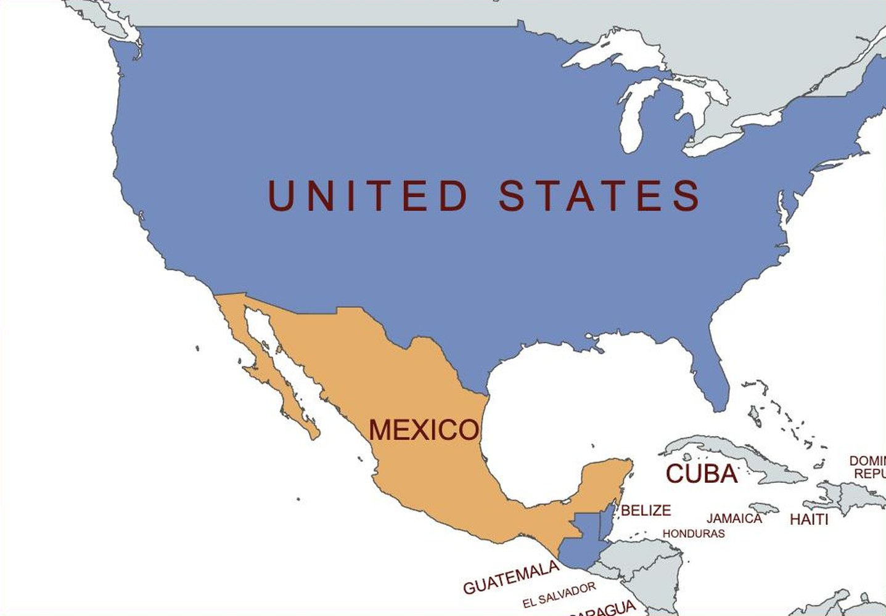
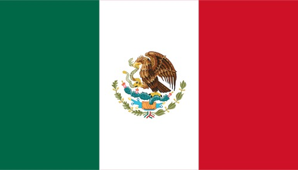
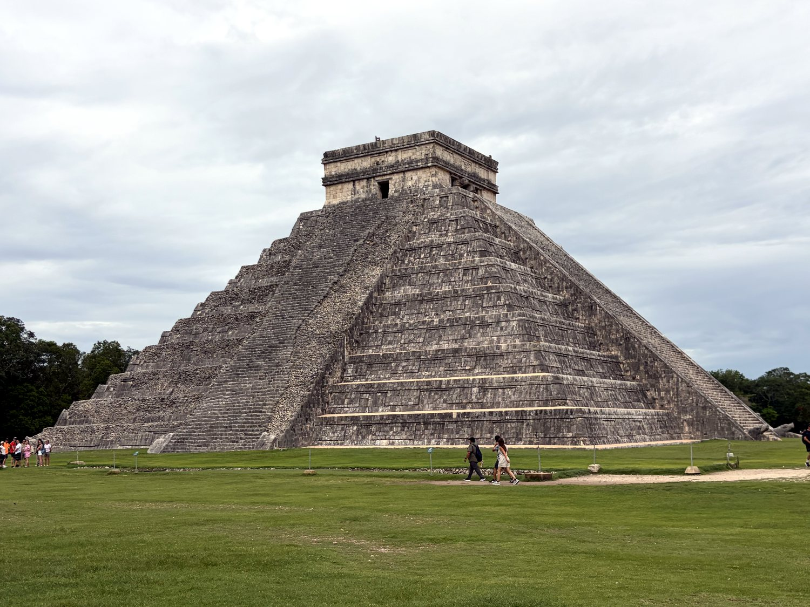
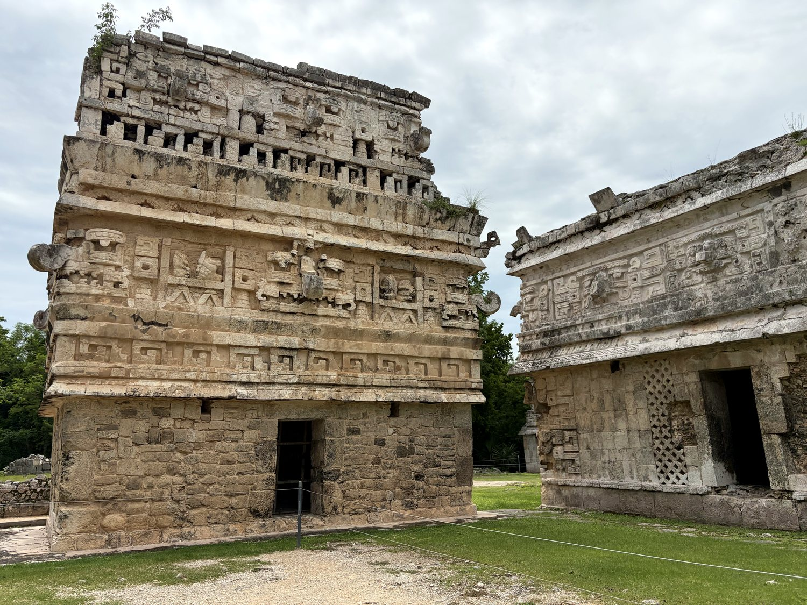
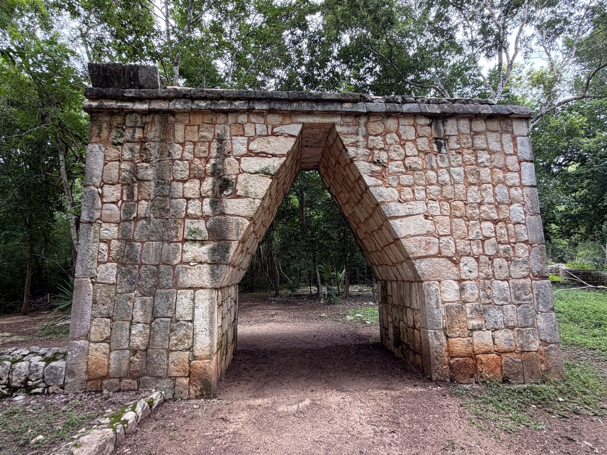
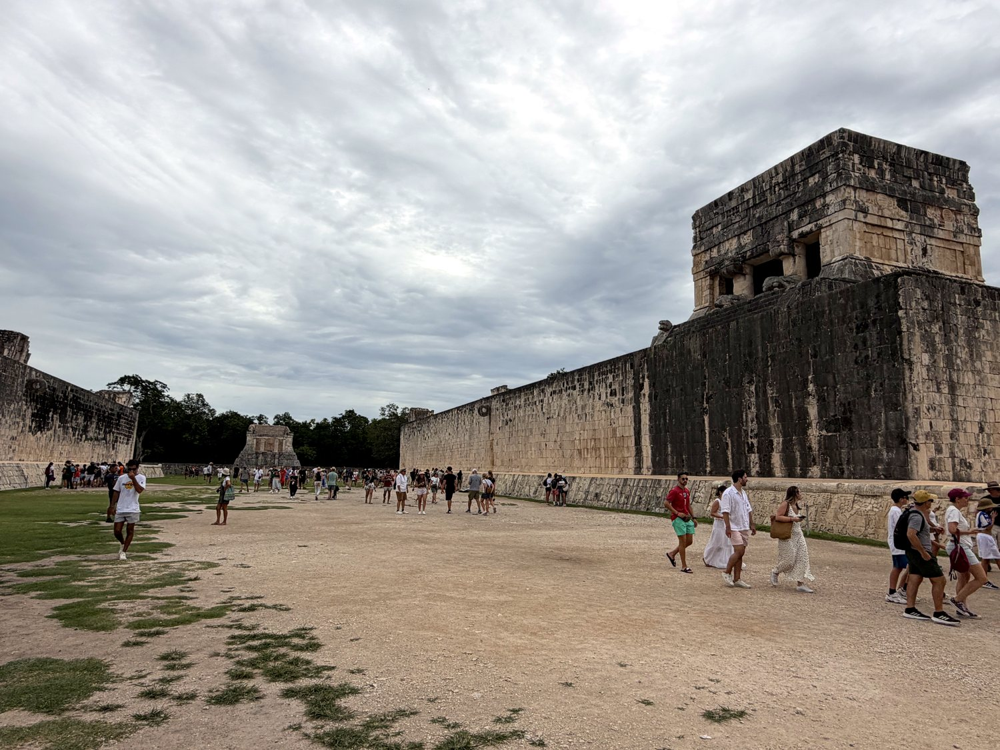
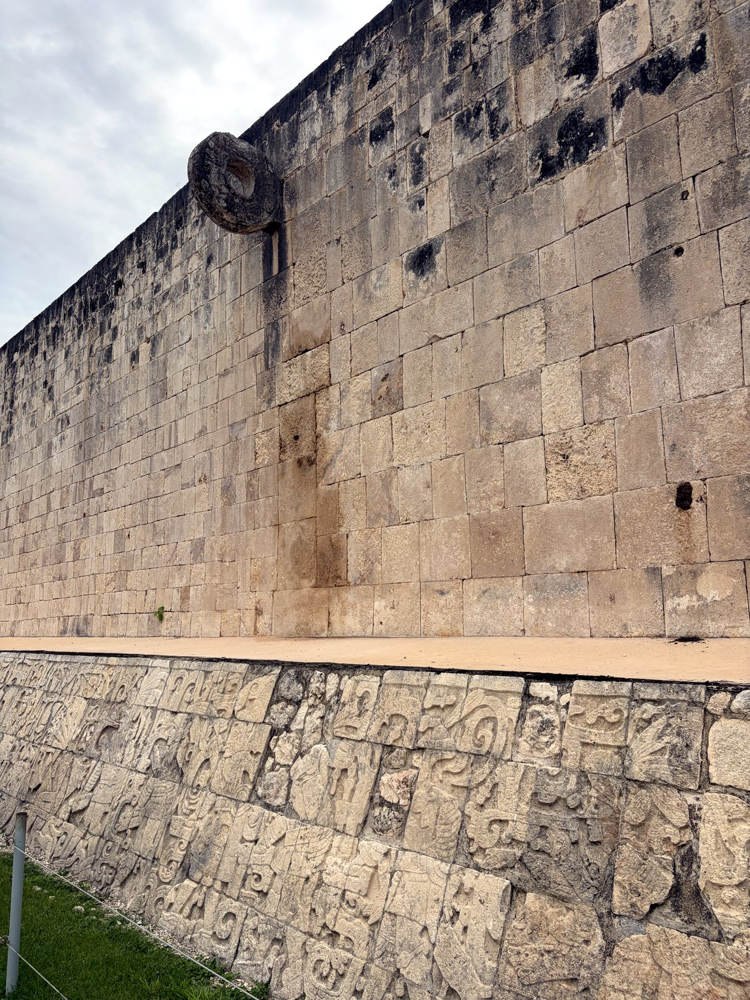
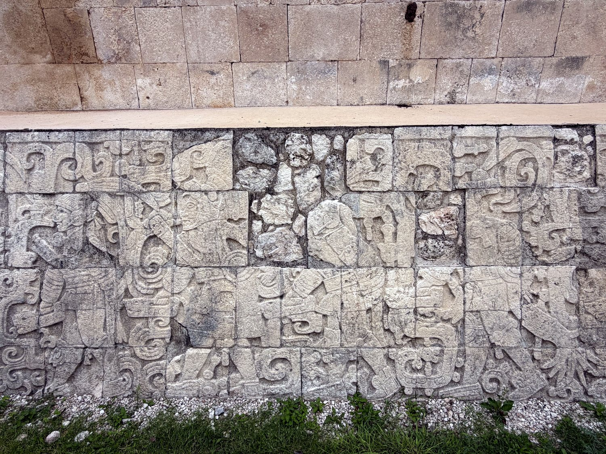
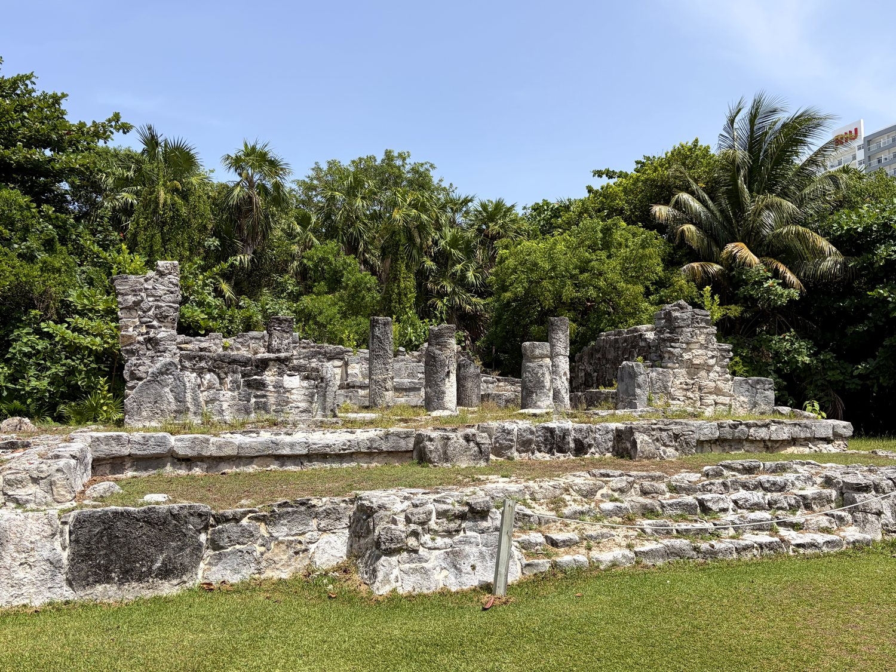
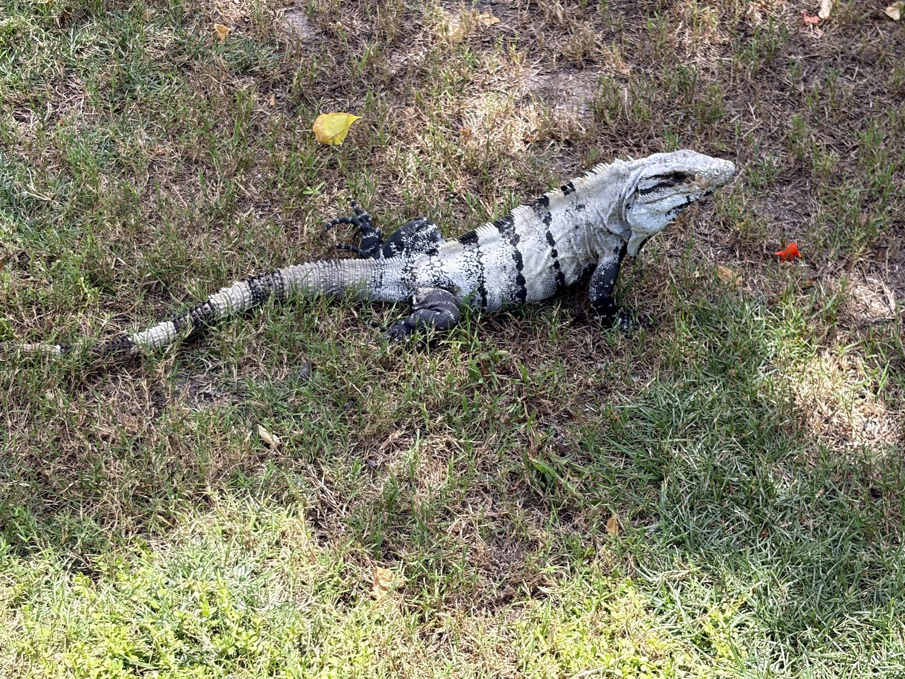

I began a month-long overland journey through Central America in August 2026 in the Mexican Yucatán, flying into Cancún with my mother. From there we rented a car and struck out across the flat, jungle-covered peninsula. The highlight was unquestionably Chichén Itzá, one of the great wonders of the ancient Americas. My own contribution to the trip's dignity came at the nearby ruins of Cobá, where I snapped at an especially pushy guide. I was promptly punished by a biblical rainstorm that soaked me, and my passport, to the bone. I believe the two events were unrelated; my mother suspects otherwise. It was a spectacular introduction to a country whose history runs far deeper than its beach resorts suggest.
Our base was Cancún, which is worth understanding for what it is: a city that essentially did not exist fifty years ago. In 1970 this was an empty sandbar, until Mexican planners selected it from computer models as the site of a purpose-built tourist megaresort. Today its Hotel Zone is a glittering strip of high-rises, luxury brands, and American chains that could occur almost anywhere. Yet a short drive inland lies the real Yucatán, the ancient heartland of the Maya, whose pyramids and sacred sinkholes predate the resorts by well over a thousand years. That collision of the manufactured and the ancient is Mexico in miniature.

Long before the Spanish arrived, Mexico was home to some of the most sophisticated civilizations on earth. In the Yucatán, the Maya built vast city-states like Chichén Itzá, mastering astronomy, mathematics, and a full writing system while much of Europe was in the early Middle Ages. To the west, in the highlands, a succession of great powers culminated in the Aztecs, whose capital Tenochtitlán rose on an island in a lake and grew into one of the largest cities in the world. These were not primitive kingdoms. They were empires with monumental architecture, complex religion, and sophisticated economies, connected by trade and warfare across Mesoamerica.

That world was shattered with astonishing speed. In 1519 the conquistador Hernán Cortés landed on the coast. Within two years, aided by native allies who resented Aztec rule and by the smallpox that raced ahead of him, he had toppled Tenochtitlán. For three centuries Mexico was the crown jewel of Spain's empire, before winning independence in 1821 after a long and bloody struggle. The nation that emerged has been shaped by revolution, by its complicated intimacy with the United States, and by a proud mestizo identity that fuses Indigenous and Spanish roots. Its flag captures the founding myth: an eagle perched on a cactus devouring a serpent, the omen that told the wandering Aztecs where to build their capital.
Chichén Itzá is counted among the New Seven Wonders of the World, and standing before its great pyramid you understand why. The temple of Kukulcán rises in nine stark terraces, and its design is a calendar in stone, with 365 steps for the days of the year. The Maya were such precise astronomers that twice a year, at the equinoxes, the afternoon sun casts a shadow of a serpent slithering down its northern staircase. The whole city was once painted in vivid colours, and it was built atop sacred cenotes, the natural sinkholes into which the Maya cast offerings. My favourite trick was acoustic: clap your hands before the main staircase and the echo returns as a strange chirp, said to imitate the call of the sacred quetzal bird.



Beside the pyramid lies the largest ball court in all of Mesoamerica, and it is the setting for one of the ancient world's most fascinating rituals. Across the region, cultures for three thousand years played a sacred ball game using a heavy rubber ball that players struck with their hips, aiming, in this grand version, at two stone rings mounted high on the walls. The game was far more than sport. It was bound up with cosmology, a re-enactment of the struggle between day and night. Some games could end in human sacrifice, with carvings appearing to depict the decapitation of a player. Whether it was the winners or the losers who met that fate is still debated, which rather changes one's incentives. The court's acoustics are uncanny too: a whisper at one end carries clearly to the other, over a hundred metres away.



Not every Maya site is a colossus, and there is a quiet charm to the small ones. On our first afternoon in Cancún, before the grandeur of Chichén Itzá, we wandered the El Rey Archaeological Zone, a modest cluster of small ruins tucked improbably into the Hotel Zone itself. The stones here are humble, the remains of a small Postclassic coastal settlement of traders and fishermen. The real stars are the iguanas, dozens of them, sunning themselves on the ancient platforms and blending so perfectly into the pale limestone that you nearly step on them. It was a lovely, low-key first taste of the Maya world, with luxury resorts glinting just beyond the trees.

